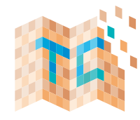
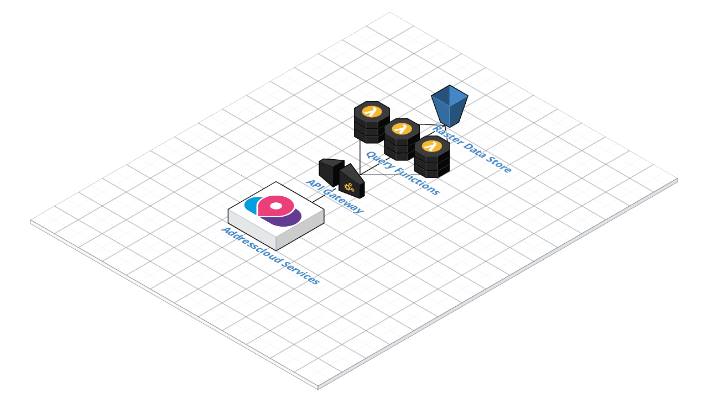

Roger Veciana i Rovira
GeoTIFF
GET /dem.tiff
Range: bytes=16056075-16711425
content-range: bytes 16056075-16711425/26705623
gdal_translate ori.tiff out.tiff -co COMPRESS=LZW -co TILED=YES
gdaladdo -r average out.tif 2 4 8 16
python3 validate_cloud_optimized_geotiff.py out.tiff
gdallocationinfo --debug on /vsicurl/http://dominio.com/archivo.tiff 5000 5000
gdal_translate /vsicurl/http://dominio.com/archivo.tiff \
-srcwin 1024 1024 256 256 out.tif
Terracotta
Rasterio + AWS
Meta Raster Format
Admite teselas vacías
Necesita intervención del servidor